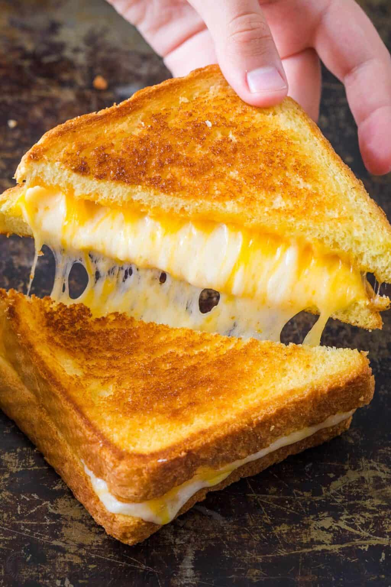

Grilled Cheese

Description
A grilled cheese (or toasted sandwich) is a hot sandwich typically prepared by heating one or more slices of cheese between slices of bread, with a cooking fat such as butter, on a frying pan, griddle, or sandwich toaster, until the bread browns and the cheese melts. A grilled cheese may contain ingredients besides the bread and cheese, as long as the latter is the main focus.
Ingredients
- 2 slices bread, your choice
- 2-4 tablespoons butter
- 2 slices cheese, your choice
- optionally, ham
Instructions
- First, butter both sides of each piece of bread.
- To a skillet on medium heat, put in one slice of bread, both pieces of cheese (and ham, optionally) and top with the third slice of bread
- Cook until the first side is golden brown and toasty. Flip over and let the other side of the bread cook, and the cheese melts
- Remove from heat, and enjoy!
Back to Home!